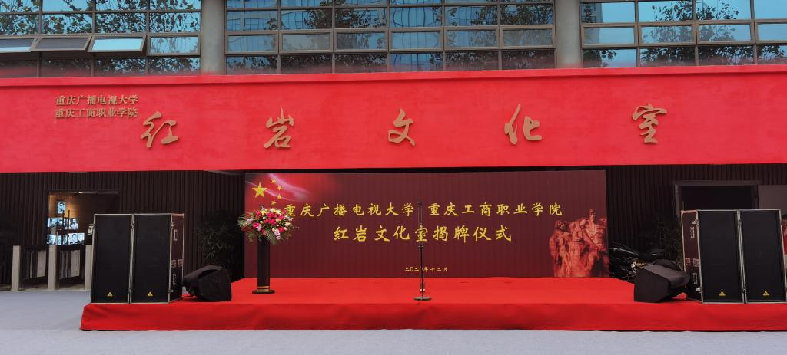
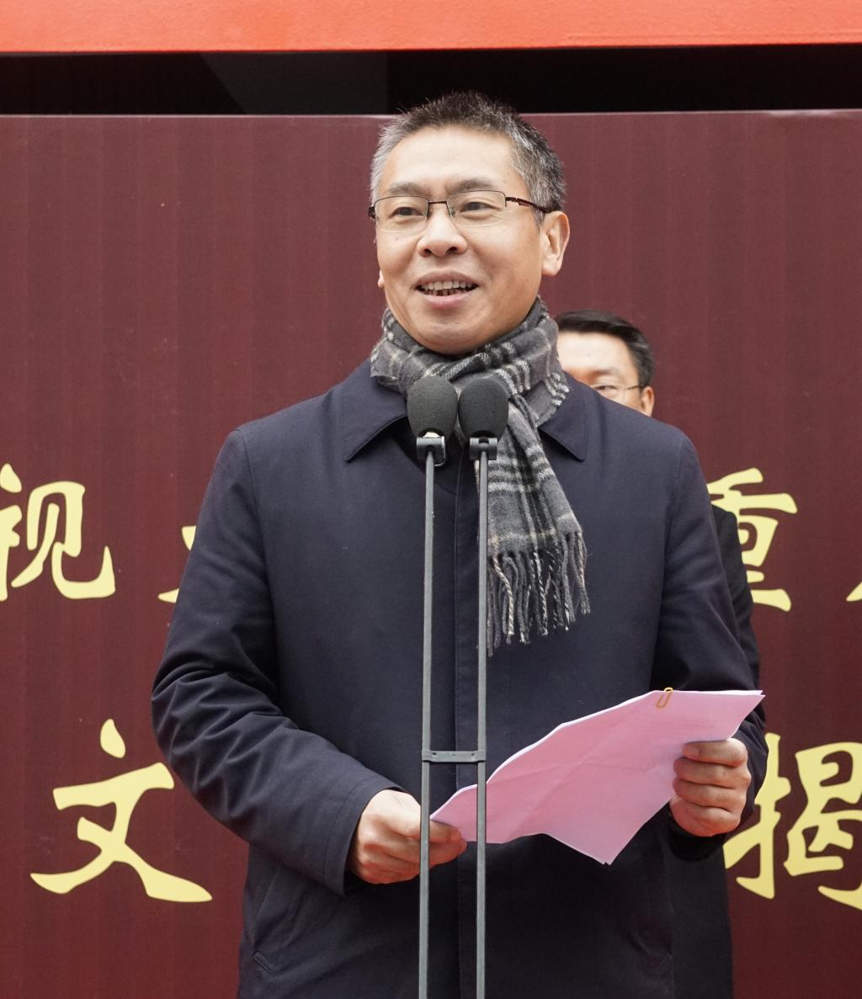
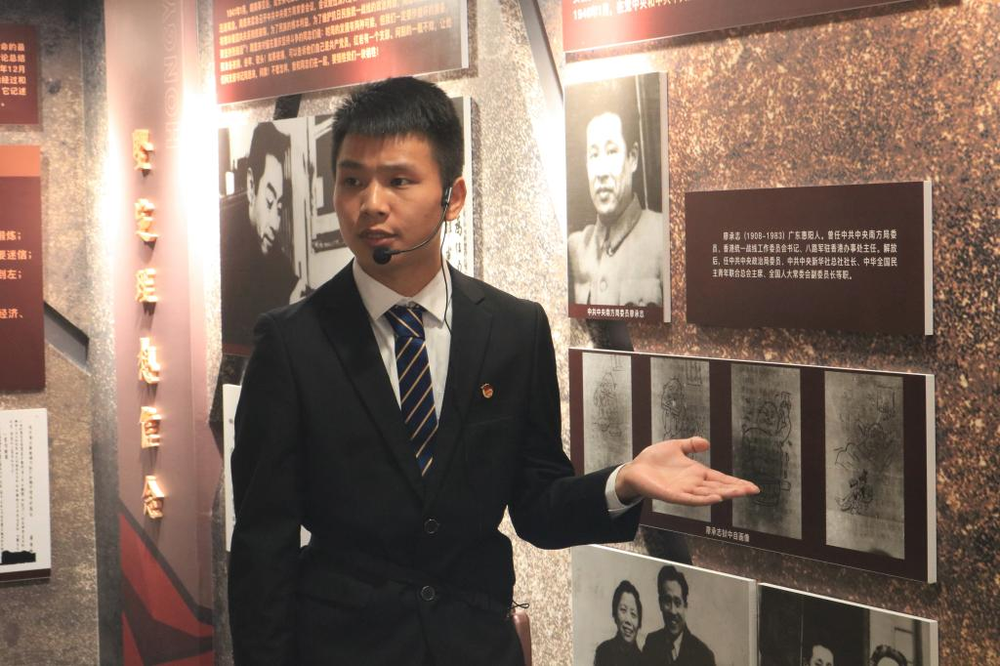
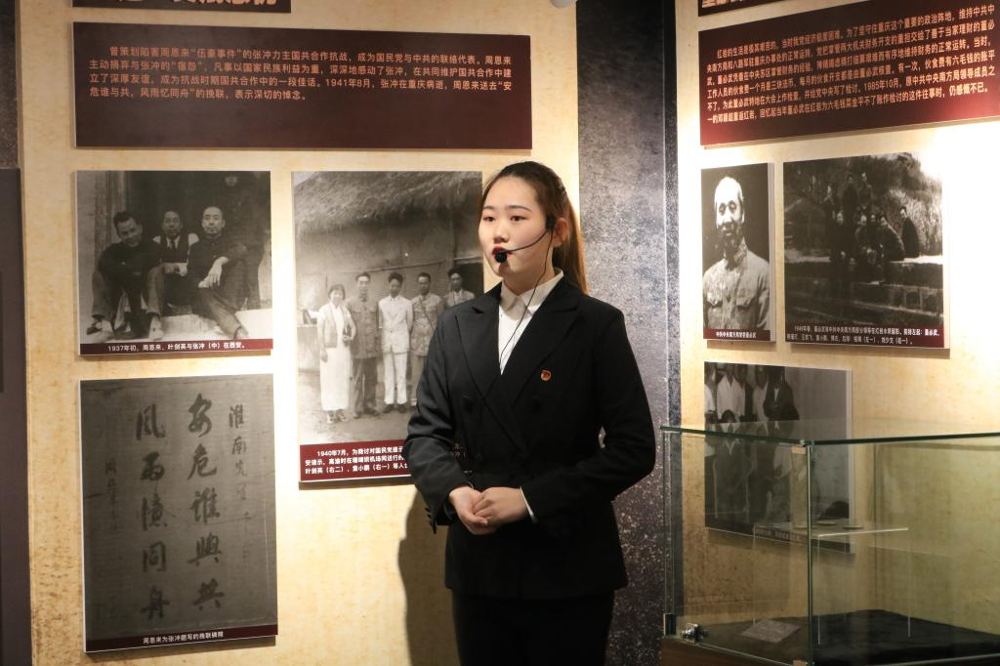
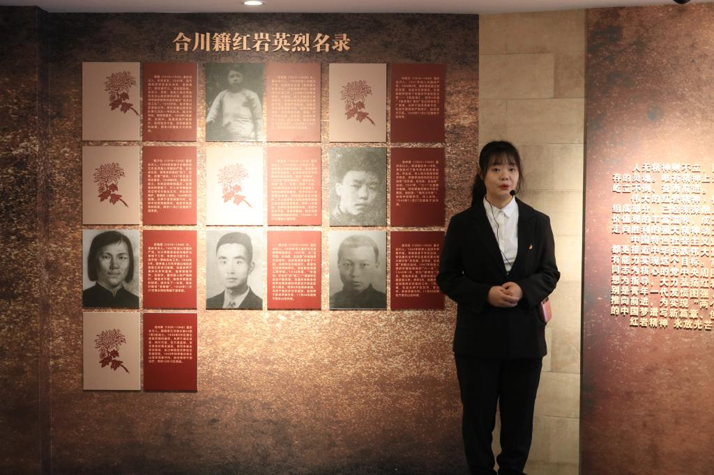
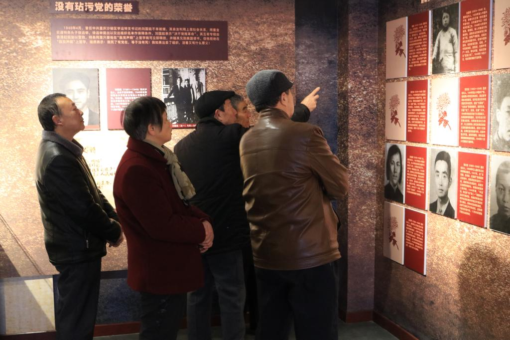
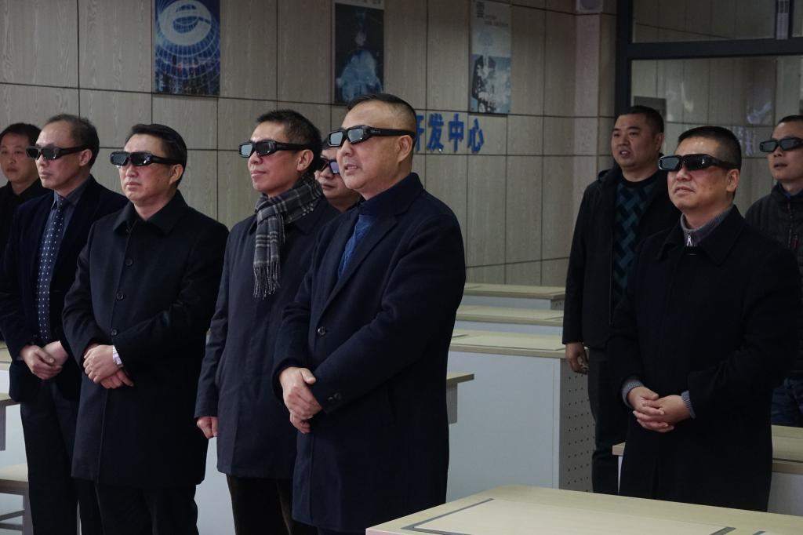
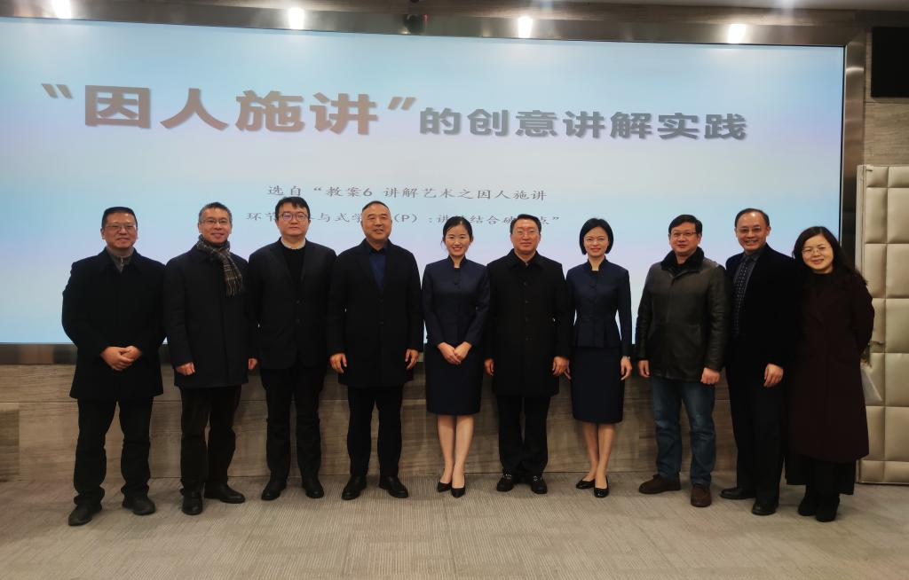

【供稿/党委宣传部】为深入学习贯彻党的十九届五中全会精神，加强红色资源保护利用，把革命传统发扬好、把红色基因传承好、把爱国情怀培育好，实现红岩精神和高校教育的深度融合，12月8日上午，我校与重庆红岩联线文化发展管理中心合作共建的红岩文化室正式揭牌，标志着合川区首个红岩文化室顺利建成并正式对外开放。
重庆红岩联线文化发展管理中心党委书记朱军，合川区委常委、宣传部长卢波，重庆红岩联线文化发展管理中心社会教育工作部部长周万炯，市教委宣教处张忠伟，校党委书记郭庆出席揭牌仪式。仪式由校党委委员、组织部部长王剑华主持。

据了解，红岩文化室是重庆红岩联线文化发展管理中心充分运用红岩文化资源，根据全市思想文化宣传工作需要，在全市乃至全国各地创建的“红岩微型博物馆”。作为弘扬红岩精神的重要宣教平台，红岩文化室将红岩精神送到群众身边、送到老百姓家门口，对积极推进地方先进文化和红色文化建设，健全公共文化服务体系，有效提升红岩文化传播力、辐射力、影响力具有显著的教育服务功能。


在重庆市合川广播电视大学-重庆广播电视大学、重庆工商职业学院创建的红岩文化室，充分挖掘红岩底蕴，积极发挥红岩精神在开展党史、新中国史、改革开放史、社会主义发展史教育中的鲜活作用，围绕崇高思想境界、坚定理想信念、巨大人格力量、浩然革命正气四个部分做好文章，在现有阵地建设基础上，进一步推进馆校深度合作，为优秀革命传统教育与理想信念教育不断拓宽宣教平台、密织教育传播网络。


值得一提的是，我校红岩文化室增设了合川红岩革命英烈名录版块，作为传承身边革命英烈故事，生动展示合川新民主主义革命时期光辉历史的重要窗口，为市民缅怀革命烈士、接受精神洗礼提供了又一重要党性教育平台。
党委书记郭庆在讲话中指出，在红岩文化室建设过程中，我校与红岩联线建立起了良好和合作关系，结下了深厚的友谊。近年来，我校大力推进红岩精神进校园、进班级、进课堂，红岩班、红岩精神讲解队、红岩志愿服务队赢得社会好评。下一步，学校将围绕建好红岩文化室、用好红岩文化室、讲好红岩故事，进一步引导广大师生传承红色基因，争做时代新人。同时，期待与社会各界在红岩精神理论研究、文化传播、社会教育等方面开展深入交流合作，不断推动红岩精神与高校教育深度融合、共同发展。
仪式结束后，各位领导及学校相关职能部门负责人还参观了我校电子信息工程学院虚拟现实创新教育实训室，同时慰问了即将出征参加全国职业院校教师教学能力大赛的管理学院教师团队。
